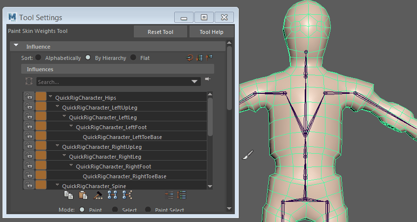
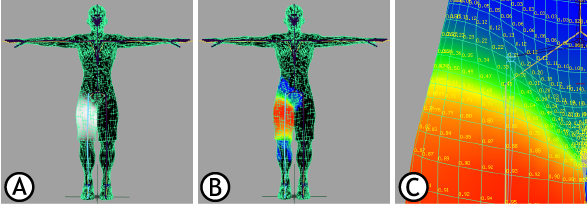

绘制平滑蒙皮点权重
- 选择要绘制的平滑蒙皮对象。
- 通过选择“着色 > 对所有项目进行平滑着色处理”(Shading > Smooth Shade All)（热键：按 5）来启用平滑着色模式。
- 打开“绘制蒙皮权重工具”(Paint Skin Weights Tool)（“蒙皮 > 绘制蒙皮权重工具”(Skin > Paint Skin Weights Tool) >
 ）。
注：
）。
注：已对“绘制蒙皮权重工具”(Paint Skin Weights Tool)禁用“反射”(Reflection)，但是可以使用“镜像蒙皮权重”(Mirror Skin Weights)（在“蒙皮”(Skin)菜单的“权重贴图”(Weight Maps)部分中）作为替代反射蒙皮权重的方法。
- 若要选择某个关节，请执行下列操作之一：
- 在“绘制蒙皮权重工具”(Paint Skin Weights Tool)的“影响物”(Influences)列表中选择关节名称。
- 在要绘制的关节上单击鼠标右键，然后在出现的标记菜单中选择“选择影响物”(Select Influence)。
提示： 您可以使用鼠标中键单击关节，然后按向上和向下箭头键来浏览角色的关节层级。选择要绘制的影响物时，网格以黑白显示权重反馈（默认情况下），值越小，显示越暗；值越大，显示越亮。
使用“可视化”(Visualization)标题下的“颜色渐变”(Color Ramp)或“数值”(Numeric)反馈，通过以颜色和/或数字值显示权重影响物来对其进行标识。
权重可视化选项：A.默认颜色 B.颜色渐变 C.数值
注： 默认热键 Alt+C（Windows 和 Linux）或 Option+C (Mac OS X) 可在“绘制蒙皮权重工具”(Paint Skin Weights Tool)之外启用和禁用“颜色反馈”(Color Feedback)。 - 确保已在“绘制蒙皮权重工具”(Paint Skin Weights Tool)中设置希望的笔刷、绘制操作、值及其他任何设置。
例如，确保“权重类型”(Weight Type)下拉列表已设置为“蒙皮权重”(Skin Weight)，并选择所需的“归一化权重”(Normalize Weights)模式。
- 沿蒙皮拖动以绘制权重。
绘制的值可设置此关节相对于组成平滑体的其他关节对绘制的顶点的影响力（直到达到在绑定蒙皮选项(Bind Skin Options)中指定为“最大影响物”(Max Influences)的数值）。
 ) 或收缩 (
) 或收缩 ( ) “影响物”(Influences)列表。
) “影响物”(Influences)列表。